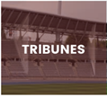

Construction d’infrastructures clés en main
Construction d’infrastructures clés en main.
Travaillez avec nous c’est avoir un interlocuteur unique,
pouvant piloter de manière efficace et professionnelle votre futur projet,
dans le respect des délais et des dernières normes internationales.
Ensemble, nous créons un lieu idéal ou un large public pourra profiter d’activités sportives
variées.

Tribunes et gradins
Chez DABS, notre équipe vous offre la possibilité de choisir différents types de tribunes
(modulaires,
modulaires industrialisés, tribunes-vestiaires), adaptés à vos besoins.
Couvertes
Pour répondre à l’ensemble de vos besoins et vous apportez une solution sur mesure,
notre équipe vous propose de meilleurs habillages pour vos terrains multisports,
avec l’usage des toutes dernières technologies.
Rénovation, réhabilitation et mise aux normes des Airs et Fitness
Notre expertise nous permet de vous accompagner dans la mise en place
d’équipements sportifs au sein des espaces publics et privés.
Nous travaillons avec nos clients tout au long de leur projet
pour créer une salle de musculation intérieure ou extérieure qui s’intègre parfaitement dans son
environnement .
Aires de jeux
Depuis plus de 10 ans, DABS imagine et conçoit des aires de jeux qui participent
à l’épanouissement et à l’éveil des enfants. A travers de la conception d’équipements
ludiques et esthétiques, nous tenons à cœur d’offrir aux enfants une aire de jeux ou coexistent
plaisir et développement.